CosMX non-small cell lung cancer data
Lambda Moses
2024-05-12
Source:vignettes/vig4_cosmx.Rmd
vig4_cosmx.RmdIntroduction
Nanostring GeoMX DSP is a popular spatial transcriptomics technology for formalin fixed paraffin embedded (FFPE) tissues, but it doesn’t have single cell resolution. The CosMX FISH based technology for FFPE tissue (He2021-oy?) does have single cell resolution, and this vignette provides an example of how to analyze CosMX data with voyager. Note that FFPE is a common way to preserve and archive tissue, and in some cases, the only samples available may be FFPE.
The CosMX dataset for non-small cell lung cancer that we used is
described in (He2021-oy?). The processed
data is available for download from the Nanostring
website. The gene count matrix, cell metadata, and cell segmentation
polygon coordinates were downloaded from the Nanostring website as CSV
files and read into R as data frames. The gene count matrix was then
converted to a sparse matrix. The cell metadata contains centroid
coordinates of the cells. The cell polygon data frames were converted
into an sf data frame with the df2sf()
function in SpatialFeatureExperiment (SFE). These were then
used to construct an SFE object. Cell segmentation is only available in
one z-plane.
library(Voyager)
library(SFEData)
library(SingleCellExperiment)
library(SpatialExperiment)
library(scater) # devel version of plotExpression
library(scran)
library(bluster)
library(ggplot2)
library(patchwork)
library(stringr)
library(spdep)
library(BiocParallel)
library(BiocSingular)
theme_set(theme_bw())
(sfe <- HeNSCLCData())
#> see ?SFEData and browseVignettes('SFEData') for documentation
#> loading from cache
#> require("SpatialFeatureExperiment")
#> class: SpatialFeatureExperiment
#> dim: 980 100290
#> metadata(0):
#> assays(1): counts
#> rownames(980): AATK ABL1 ... NegPrb22 NegPrb23
#> rowData names(3): means vars cv2
#> colnames(100290): 1_1 1_2 ... 30_4759 30_4760
#> colData names(17): Area AspectRatio ... nCounts nGenes
#> reducedDimNames(0):
#> mainExpName: NULL
#> altExpNames(0):
#> spatialCoords names(2) : CenterX_global_px CenterY_global_px
#> imgData names(1): sample_id
#>
#> unit: full_res_image_pixels
#> Geometries:
#> colGeometries: centroids (POINT), cellSeg (POLYGON)
#>
#> Graphs:
#> sample01:Only the first biological replicate is included in the
SFEData package. This biological replicate has 980 features
and 100,290 cells. Take a look at the cells in space:
plotGeometry(sfe, MARGIN = 2L, type = "cellSeg")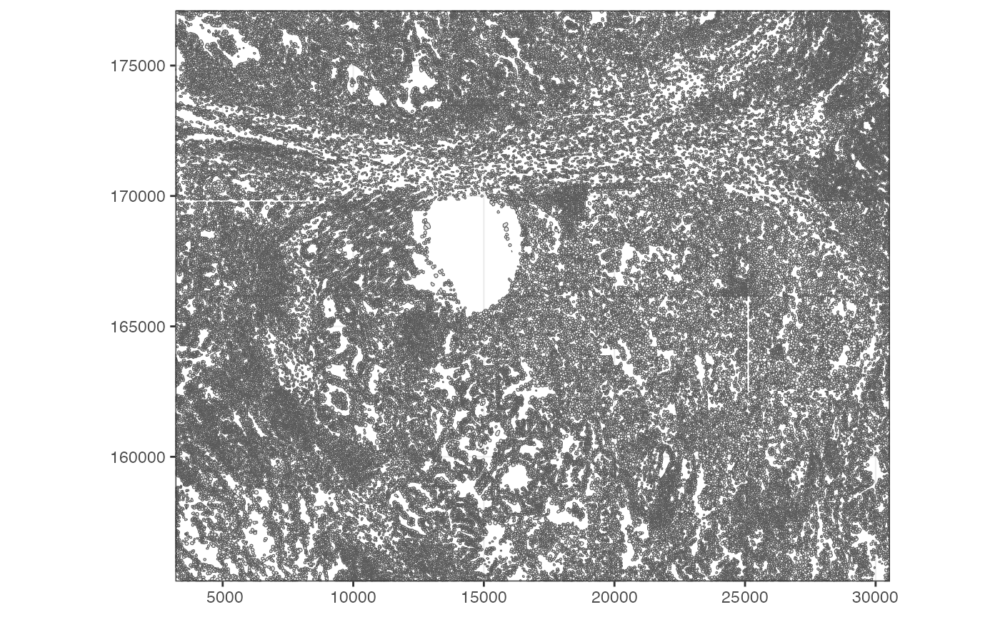
With single cell resolution, a lot of the details can be seen, although there’s some artifact from borders of fields of view (FOVs).
Plot cell density
plotCellBin2D(sfe, hex = TRUE)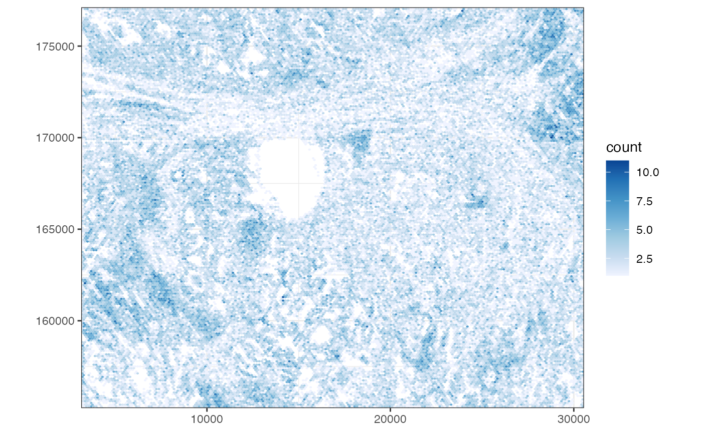
Quality control (QC)
Cells
Single cell RNA-seq (scRNA-seq) technologies typically don’t quantify cell morphology, and gene expression in Visium doesn’t have single cell resolution. Here for single cell resolution smFISH based data, each cell not only has gene expression and related QC metrics such as total number of transcripts detected and number of genes detected, but also cell morphology such as area (in the z-plane where the segmentation polygons are provided) and aspect ratio. Area is relevant to QC since it can flag falsely undersegmented cells, i.e. several cells falsely considered as one by the cell segmentation program. However, since a pre-defined gene panel is used and mitochondrially encoded genes are not quantified, the scRNA-seq QC metric of proportion of mitochondrially encoded counts is not applicable.
Some QC metrics are precomputed and are stored in
colData
names(colData(sfe))
#> [1] "Area" "AspectRatio" "Width"
#> [4] "Height" "Mean.MembraneStain" "Max.MembraneStain"
#> [7] "Mean.PanCK" "Max.PanCK" "Mean.CD45"
#> [10] "Max.CD45" "Mean.CD3" "Max.CD3"
#> [13] "Mean.DAPI" "Max.DAPI" "sample_id"
#> [16] "nCounts" "nGenes"Cell area, aspect ratio, marker and stain intensities, i.e. all
columns before “sample_id” come from Nanostring’s website. The
sf package can compute areas of the cell polygons. In R,
the EBImage package can compute more morphological metrics
such as aspect ratio, eccentricity, orientation, and etc., but it
requires the data to be converted to raster. OpenCV can compute more
morphological metrics for polygons without converting to raster, but it
needs to be called from Python or C++. Since the math behind many basic
morphological metrics is pretty simple, we may add those to
Voyager in a future version.
Since plotting 100,000 polygons is slow and the plot isn’t large
enough for us to see the polygons anyway, we use scattermore
to rasterize the plot to speed up plotting. Instead of plotting every
single point, now ggplot merely displays a rasterized
image.
# Function to plot violin plot for distribution and spatial at once
plot_violin_spatial <- function(sfe, feature) {
violin <- plotColData(sfe, feature, point_fun = function(...) list())
spatial <- plotSpatialFeature(sfe, feature, colGeometryName = "centroids",
scattermore = TRUE)
violin + spatial +
plot_layout(widths = c(1, 2))
}Number of transcript spots detected per cell
plot_violin_spatial(sfe, "nCounts")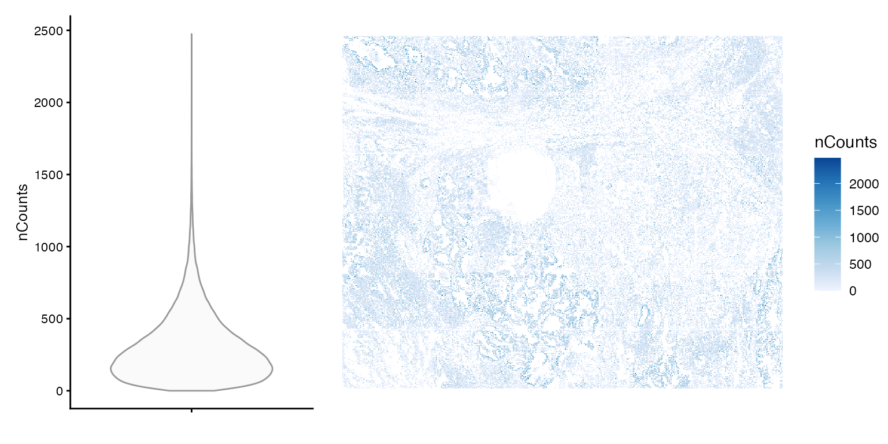
summary(sfe$nCounts)
#> Min. 1st Qu. Median Mean 3rd Qu. Max.
#> 0.0 135.0 248.0 302.8 409.0 2475.0To make nCounts and nGenes more comparable across datasets, we divide them by the number of genes probed. In this dataset, there are 960 genes, and 20 negative controls. However, because different genes may be probed in different datasets, which can be from different tissues, this does not make nCounts and nGenes completely comparable across datasets. However, it may still be somewhat comparable, since genes highly expressed in major cell types in the tissue tend to be selected for the gene panel.
n_panel <- 960
colData(sfe)$nCounts_normed <- sfe$nCounts/n_panel
colData(sfe)$nGenes_normed <- sfe$nGenes/n_panel
plotColDataHistogram(sfe, c("nCounts_normed", "nGenes_normed"))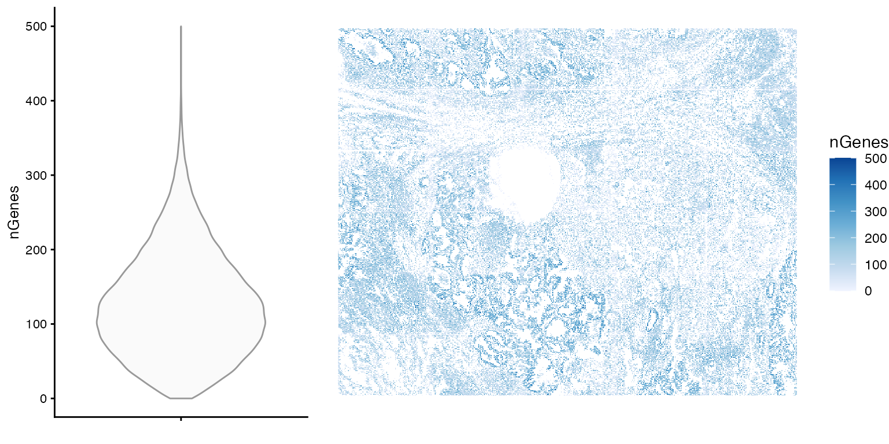
This means the cells mostly have less than 1 transcript count per gene on average, which is not surprising since not all cells express all genes. Most cells are detected to express less than 30% of all genes probed.
Number of genes (out of 980) detected per cell
plot_violin_spatial(sfe, "nGenes")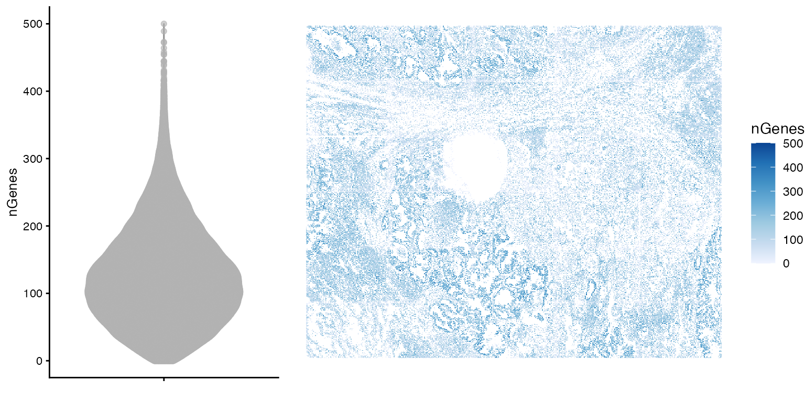
summary(sfe$nGenes)
#> Min. 1st Qu. Median Mean 3rd Qu. Max.
#> 0.0 75.0 119.0 127.1 171.0 500.0Based on the spatial plot, it seems that nCounts and nGenes are biologically relevant, but there are cells with no transcripts detected.
How nCounts relates to nGenes
plotColData(sfe, x = "nCounts", y = "nGenes", bins = 100)
What’s the nature of the cells without transcripts?
plotSpatialFeature(sfe, "is_empty", "cellSeg")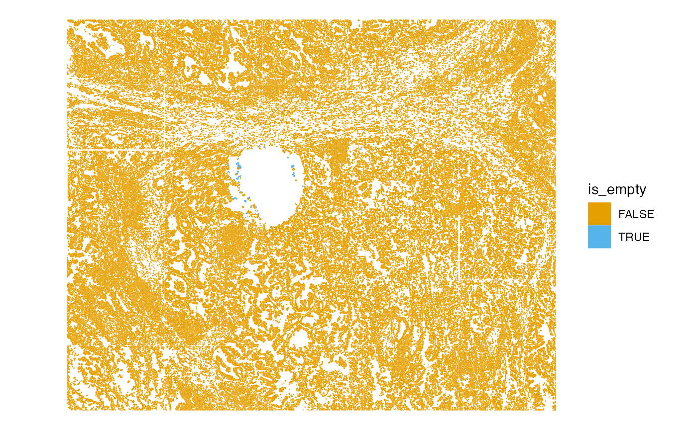
The cells without transcripts are in the central cavity.
plotColData(sfe, x = "Area", y = "is_empty")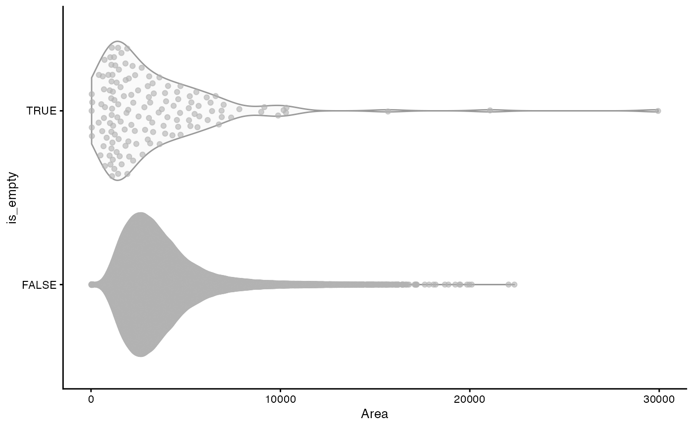
The “empty” cells tend to be smaller than other cells but there are also some really large ones.
Cell area distribution
plot_violin_spatial(sfe, "Area")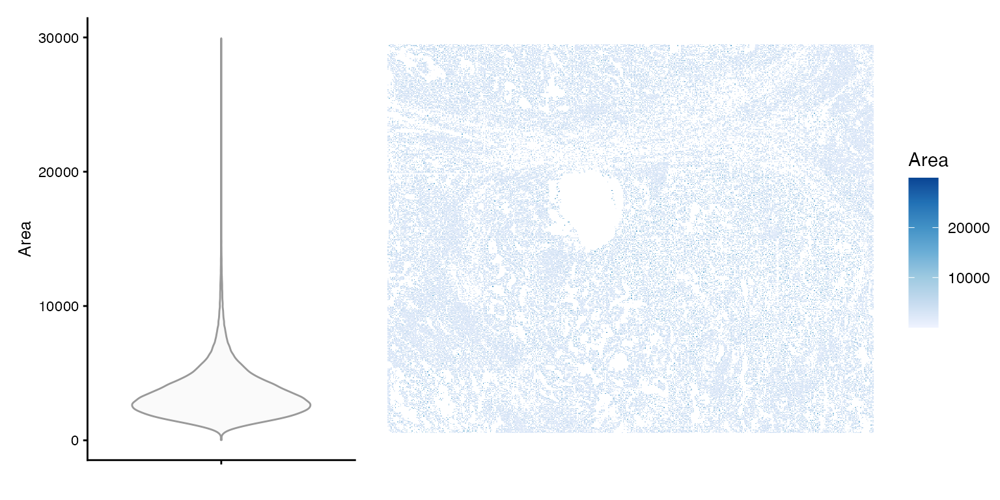
Larger cells are more likely to be found in certain areas of the tissue. It could be biological, or that under-segmentation is more likely for that cell type or that tissue region.
How does area relate to total counts?
plotColData(sfe, x = "nCounts", y = "Area", bins = 100) + theme_bw()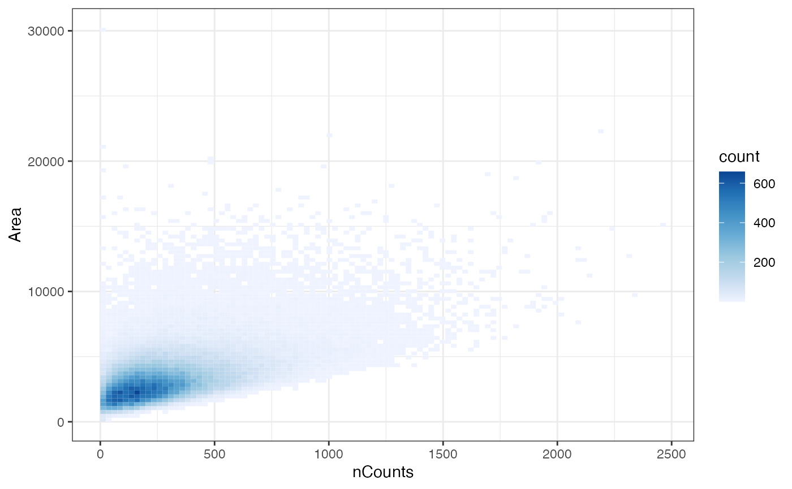
While there may vaguely seem that cells with more total counts tend to be larger (at least in this z-plane), there are some cells that are large but have low total counts.
Negative control probes are used in this dataset for QC. Here we calculate the proportion of transcripts attributed to the negative controls.
neg_inds <- str_detect(rownames(sfe), "^NegPrb")
# Number of negative control probes
sum(neg_inds)
#> [1] 20
colData(sfe)$prop_neg <- colSums(counts(sfe)[neg_inds,])/colData(sfe)$nCounts
plot_violin_spatial(sfe, "prop_neg")
#> Warning: Removed 142 rows containing non-finite outside the scale range
#> (`stat_ydensity()`).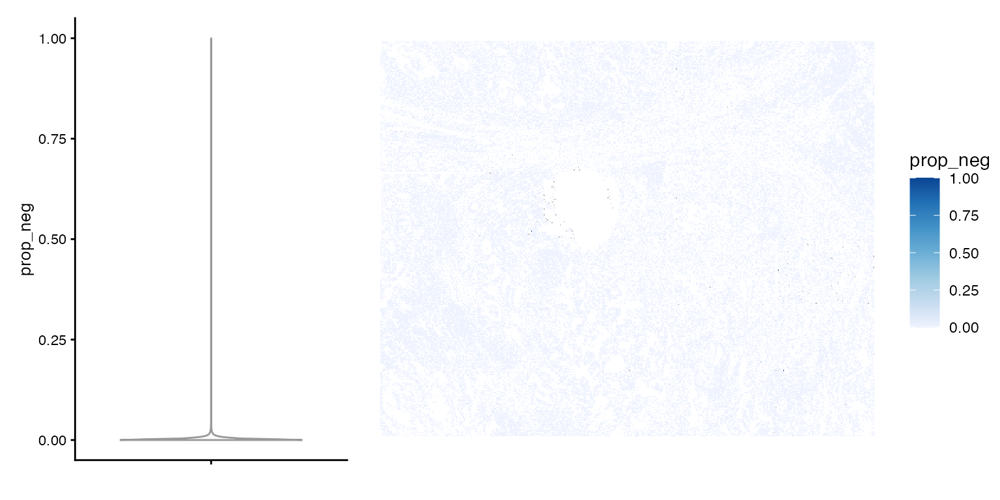
The NA’s are empty cells, and the proportion is very low except for a few outliers. How does prop_neg relate to nCounts?
plotColData(sfe, x = "nCounts",y = "prop_neg", bins = 100)
#> Warning: Removed 142 rows containing non-finite outside the scale range
#> (`stat_bin2d()`).
This looks kind of like the proportion of mitochondrial counts vs. nCounts plot for scRNA-seq, where cells with fewer total counts tend to have higher proportion of mitochondrial counts.
# The zeros are removed
plotColDataHistogram(sfe, "prop_neg") +
scale_x_log10()
#> Warning in scale_x_log10(): log-10 transformation introduced
#> infinite values.
#> Warning: Removed 59213 rows containing non-finite outside the scale range
#> (`stat_bin()`).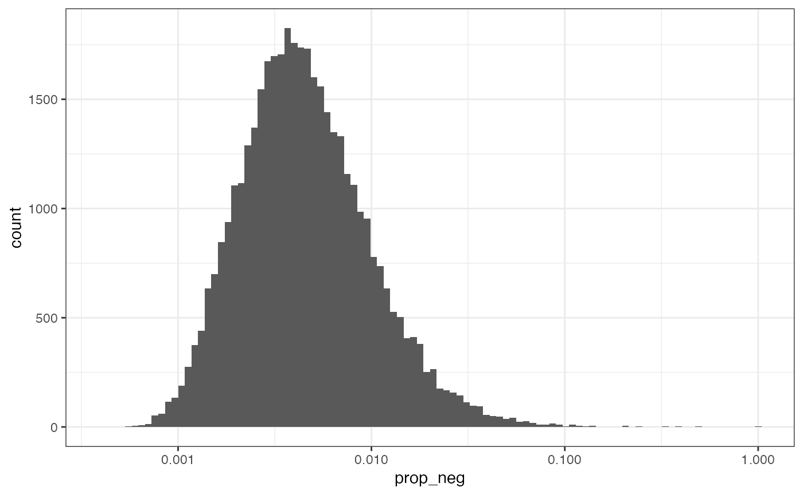
The distribution is not obviously bimodal, and since the x-axis is log transformed to better visualize the distribution, the 0’s have been removed. It’s kind of arbitrary; for now we’ll remove cells with more than 10% of transcripts from negative controls.
# Remove low quality cells
(sfe <- sfe[,!sfe$is_empty & sfe$prop_neg < 0.1])
#> class: SpatialFeatureExperiment
#> dim: 980 100095
#> metadata(0):
#> assays(1): counts
#> rownames(980): AATK ABL1 ... NegPrb22 NegPrb23
#> rowData names(3): means vars cv2
#> colnames(100095): 1_1 1_2 ... 30_4759 30_4760
#> colData names(21): Area AspectRatio ... is_empty prop_neg
#> reducedDimNames(0):
#> mainExpName: NULL
#> altExpNames(0):
#> spatialCoords names(2) : CenterX_global_px CenterY_global_px
#> imgData names(1): sample_id
#>
#> unit: full_res_image_pixels
#> Geometries:
#> colGeometries: centroids (POINT), cellSeg (POLYGON)
#>
#> Graphs:
#> sample01:After removing the low quality cells, there are 100,095 cells left.
Markers
Nanostring provides some cell stain and marker intensities in the cell metadata.
names(colData(sfe))
#> [1] "Area" "AspectRatio" "Width"
#> [4] "Height" "Mean.MembraneStain" "Max.MembraneStain"
#> [7] "Mean.PanCK" "Max.PanCK" "Mean.CD45"
#> [10] "Max.CD45" "Mean.CD3" "Max.CD3"
#> [13] "Mean.DAPI" "Max.DAPI" "sample_id"
#> [16] "nCounts" "nGenes" "nCounts_normed"
#> [19] "nGenes_normed" "is_empty" "prop_neg"Here we plot aspect ratio and mean intensity of cells stains and
markers, which have not been plotted before. PanCK is a marker for
epithelial cells. CD45 is a leukocyte marker. CD3 is a T cell marker.
Since it takes quite a while to plot 100,000 cells 6 times,
scattermore really helps.
plotSpatialFeature(sfe, c("AspectRatio", "Mean.DAPI", "Mean.MembraneStain",
"Mean.PanCK", "Mean.CD45", "Mean.CD3"),
colGeometryName = "centroids", ncol = 2, scattermore = TRUE)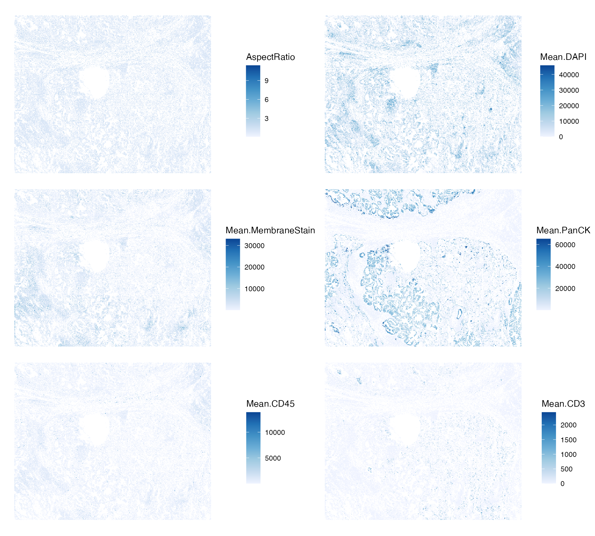
Genes
rowData(sfe)$means <- rowMeans(counts(sfe))
rowData(sfe)$vars <- rowVars(counts(sfe))
rowData(sfe)$is_neg <- neg_inds
plotRowData(sfe, x = "means", y = "vars", bins = 50) +
geom_abline(slope = 1, intercept = 0, color = "red") +
scale_x_log10() + scale_y_log10() +
annotation_logticks() +
coord_equal()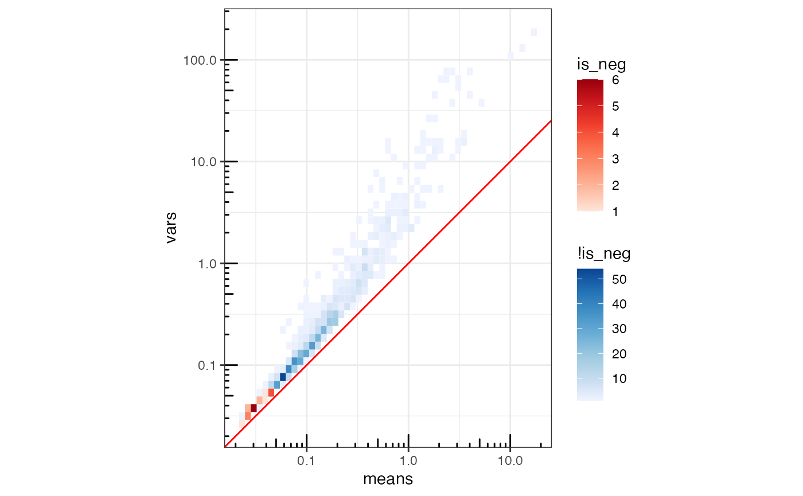
The red line \(y = x\) is expected from Poisson data. Gene expression in this dataset has more variance than expected from Poisson, even for gene with lower expression. Zoom into the negative controls
as.data.frame(rowData(sfe)[neg_inds,]) |>
ggplot(aes(means, vars)) +
geom_point() +
geom_abline(slope = 1, intercept = 0, color = "red") +
scale_x_log10() + scale_y_log10() +
annotation_logticks() +
coord_equal()
Among the “high quality” cells, the negative controls still have higher variance relative to mean compared to Poisson.
Negative controls vs. real genes
plotRowData(sfe, x = "means", y = "is_neg") +
scale_y_log10() +
annotation_logticks(sides = "b")
The negative controls have lower mean “expression” than the vast majority of real genes.
Spatial autocorrelation in QC metrics
A spatial neighborhood graph is required for spatial dependence
analyses with spdep. Without a benchmark, we don’t yet know
which type of neighborhood graph is the best for which purpose.
Methods to find spatial neighborhood graphs in spdep
other than knearneigh() (k nearest neighbors),
dnearneigh() (find cells within a certain distance), and
poly2nb() (polygon contiguity) are not recommended for
larger datasets. While cell-cell contact may be biologically relevant,
because cell segmentation is imperfect, leading to non-contiguous cell
segmentation polygons for cells that appear contiguous in H&E, only
using poly2nb() to find polygon contiguity neighbors
without supplementing with another kind of neighborhood is problematic.
Delaunay triangulation with the deldir package, which is
used by spdep (tri2nb()), takes 4 to 5 minutes
for a dataset of this size, but the run time increases much more
drastically than linearly as the number of cells increases. Sphere of
Interest (SOI) graph (soi.graph()) prunes edges from
triangulation that are too long, and does not take long itself. So
triangulation and SOI graph, while slower than
knearneigh(), dnearneigh(), and
poly2nb(), are somewhat practical considerations. The
implementation of gabrielneigh() and
relativeneigh() take impracticably long (over an hour and I
terminated the R session out of impatience) for this dataset so are not
recommended.
Methods to find approximate nearest neighbors such as Annoy
(AnnoyParam()) and HNSW (HnswParam()), as
supported by the bluster
and BiocNeighbors
packages might speed up finding these graphs, but we haven’t formally
benchmarked them.
See Chapter 14 of
Spatial Data Science on proximity in areal data for a more detailed
discussion of the different neighborhood graphs in spdep.
The methods for areal data are the first to be wrapped by Voyager
because much of spatial transcriptomics data is analogous to areal
geospatial data, where data from several cells are aggregated over
areas, which happens in Visium spots. Just like in geospatial areal
data, the Visium aggregation areas are arbitrary and do not represent
the underlying spatial process. Although sometimes geographical areal
units are not arbitrary, that tissues are generally not in hexagonal
grids means that Visium spot polygons are arbitrary in this context.
Regions of interest (ROI) selection spatial transcriptomics methods,
such as laser capture microdissection (LCM) and GeoMX DSP are more
obviously analogous to geospatial areal data. The aggregation also
happens when we analyze smFISH-based data at the cell level, if the
basic unit of observation is individual transcript spots.
While spdep caters to areal data, gstat
caters to geostatistical data, where a continuous spatial process is
sampled at point locations. In some ways, spatial transcriptomics data
is analogous to geostatistical data. Visium samples the supposed spatial
biological process in a regular hexagonal grid, if we pretend that
Visium spots are points. In smFISH-based single cell resolution data,
the cells observed can be thought of as a sample of an underlying
spatial biological process supervening on the specific locations of the
cells. In a sense, the cells are not samples, since smFISH based
technologies attempt to visualize all cells in the tissue section.
However, as the biological function of the tissue does not depend on
this particular spatial arrangement of individual cells (i.e. supervenes
on this particular spatial arrangement), but more of cell types, the
specific cell locations observed can be thought of as samples of the
process, if we consider the cell the basic unit of the spatial
process.
In Voyager 1.2.0 (Bioconductor 3.17), we have added semivariograms
(from the gstat
package) as an exploratory tool to identify the presence of spatial
autocorrelation, its length scale, and anisotropy (i.e. different in
different directions). Covariates can be specified when computing the
variogram to account for spatial trends and adjust for another spatial
variable. However, unlike Morans’s I, the semivariogram can’t identify
negative spatial autocorrelation, although since the spatial
neighborhood graph typically does not encode spatial directions,
spdep autocorrelation metrics can’t identify anisotropy.
Another problem with the semivariogram is that it assumes that the data
is intrinsically stationary, i.e. the semivariogram holds in the entire
dataset, or that similarity between two cells only depends on their
distance from each other, which may not be the case when spatial
autocorrelation varies in space as evident for some genes in local
spatial analyses.
Single cell smFISH based data is also dissimiliar to both areal and geostatistical data in important ways. In geospatial areal data, data from numerous basic units of the spatial process (e.g. people in epidemiology) are aggregated over areas (e.g. cities), whereas in histological space, the cell is arguably a more sensible basic unit of the biological spatial process than individual mRNA molecules. Unlike in geostatistical data, the cells as seen in the tissue section are often polygons tessellating the tissue section rather than points. Furthermore, while ideally the samples of the underlying spatial process should not affect the spatial process itself in geostatistical data, the cells play active roles in the biological spatial process.
However, data analysis methods for areal and geostatistical data can
still be relevant to EDA and descriptive models (not causal or
mechanistic) of single cell smFISH data. Different types of spatial
neighborhood graphs for cells may be relevant to different processes.
For instance, contiguity of cell segmentation polygons is relevant when
contact is involved in cell signaling, although cell segmentation is
imperfect. Positive spatial autocorrelation here can arise from contact
activation, and negative autocorrelation can arise from contact
inhibition. However, cells may also be influenced by longer range
factors such as secreted ligands, morphogens, and simpler spatial trends
like distance to artery and vein. In this case, perhaps the
semivariogram and using Euclidean distance between cells as spatial
weights in spatial autocorrelation metrics would be more relevant for
EDA. It would be interesting to compare the results from different
spatial neighborhood graphs and spatial weights, and between
spdep and gstat. Perhaps there is no one best
method, but different methods reveal different phenomena. The problem of
choosing a spatial neighborhood matrix has a long history far predating
spatial transcriptomics. See (Getis 2009)
for a brief discussion of decades of work around this issue.
Spatial autocorrelation metrics seek to measure how nearby things tend to be more similar or dissimilar, and the neighborhood graph and edge weights define what we mean by “nearby” in areal data. Note that because each Visium spot can contain from several to dozens of cells, the spatial neighborhood graphs of Visium spots describe neighborhood relationships of much longer length scales than spatial neighborhood graphs of single cells, so spatial autocorrelation metrics using the Visium graph have different meanings from cellular neighborhood graphs.
For now, just to demonstrate software usage, we use the k nearest
neighborhood graph with distance based edge weights, as commonly done in
graph based clustering in scRNA-seq, although we don’t yet know the best
value for k in each scenario. For the purpose of this vignette, say use
\(k = 5\), and the execution time isn’t
outrageous. The argument style = "W" is to row normalize
the adjacency matrix of the spatial neighborhood graph as this is
necessary for Moran scatter plot. Inverse distance edge weights can take
small values but what matter is the relative rather than the absolute
values as the distance itself is in arbitrary unit; row normalizing the
adjacency matrix makes the weighted average value from the neighbors
comparable to the value at the cell itself. In this tissue, many cells
appear contiguous, but since cell segmentation is imperfect, there are
many false singletons, which makes polygon contiguity neighbors from
poly2nb() problematic without some modification. But based
on the distribution of the number of neighbors based on contiguity,
\(k = 5\) doesn’t seem to be a bad
approximate for contiguity.
system.time(
colGraph(sfe, "knn5") <- findSpatialNeighbors(sfe, method = "knearneigh",
dist_type = "idw", k = 5,
style = "W")
)
#> Warning in (function (to_check, X, clust_centers, clust_info, dtype, nn, :
#> detected tied distances to neighbors, see ?'BiocNeighbors-ties'
#> user system elapsed
#> 5.446 0.024 5.474Now compute Moran’s I for some cell QC metrics
features_use <- c("nCounts", "nGenes", "Area", "AspectRatio")
sfe <- colDataMoransI(sfe, features_use, colGraphName = "knn5")
colFeatureData(sfe)[features_use,]
#> DataFrame with 4 rows and 2 columns
#> moran_sample01 K_sample01
#> <numeric> <numeric>
#> nCounts 0.386655 6.80818
#> nGenes 0.434639 3.19599
#> Area 0.198152 8.96966
#> AspectRatio 0.256211 43.05666Positive spatial autocorrelation is suggested, which is stronger in nCounts and nGenes.
What are the length scales of spatial autocorrelation for these QC
metrics? It would be nice if the lagged neighborhood graphs can be
stored and reused for all features rather than recomputed for each
feature as in spdep::sp.correlogram() called behind the
scene here. This takes a few minutes to run, but not as long as a
typical song. Another way to find the length scale of spatial
autocorrelation is to bin the cells into bins of different sizes and
then find spatial autocorrelation at each bin size, which probably is
faster than finding lagged values at higher and higher neighborhoods
since geom_bin2d() and geom_hex() in
ggplot2 run pretty fast even for large datasets. Or use a
semivariogram; gstat also bins the data when estimating the
semivariogram and calculating the semivariogram over very long distance
is much faster than the correlogram with cell-cell neighborhood
graphs.
system.time(
sfe <- colDataUnivariate(sfe, "sp.correlogram", features = features_use,
colGraphName = "knn5", order = 6, zero.policy = TRUE,
BPPARAM = MulticoreParam(2))
)
#> user system elapsed
#> 406.461 8.753 208.772Note that MulticoreParam() doesn’t work on Windows; this
vignette was built on Linux. Use SnowParam() or
DoparParam() for Windows. See
?BiocParallelParam for the available parallel processing
backends. We did not notice significant performance differences between
ShowParam() and MulticoreParam() in this
context.
plotCorrelogram(sfe, features_use)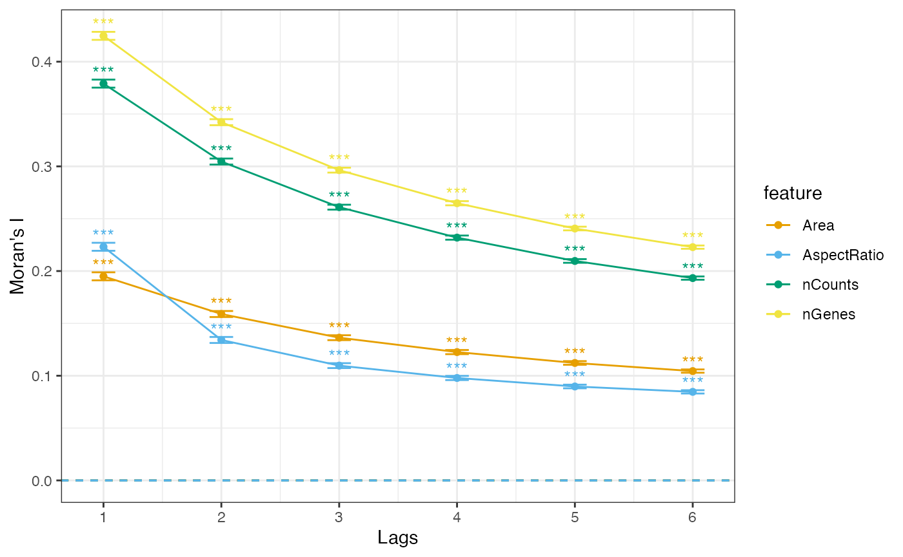
They seem to have similar length scales, but aspect ratios tend to decay more quickly.
Moran’s scatter plot for nCounts.
sfe <- colDataUnivariate(sfe, "moran.plot", "nCounts", colGraphName = "knn5")In the first panel, the density is for all points in this plot, and in the second, the points influential to fitting the line are highlighted in red, still a 2D histogram to avoid overplotting.
p1 <- moranPlot(sfe, "nCounts", binned = TRUE, plot_influential = FALSE)
p2 <- moranPlot(sfe, "nCounts", binned = TRUE)
p1 / p2 + plot_layout(guides = "collect")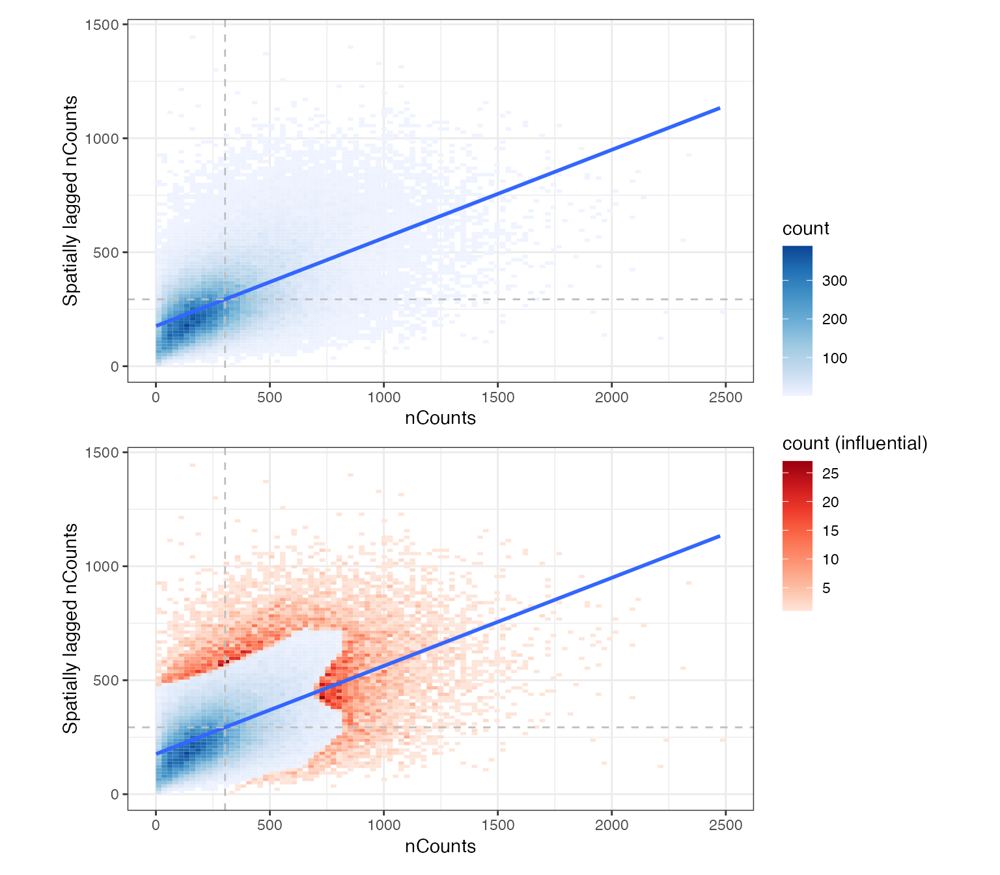
There are no obvious clusters in this plot.
Local Moran’s I for nCounts
sfe <- colDataUnivariate(sfe, "localmoran", "nCounts", colGraphName = "knn5")
plotLocalResult(sfe, "localmoran", "nCounts", colGeometryName = "cellSeg",
divergent = TRUE, diverge_center = 0)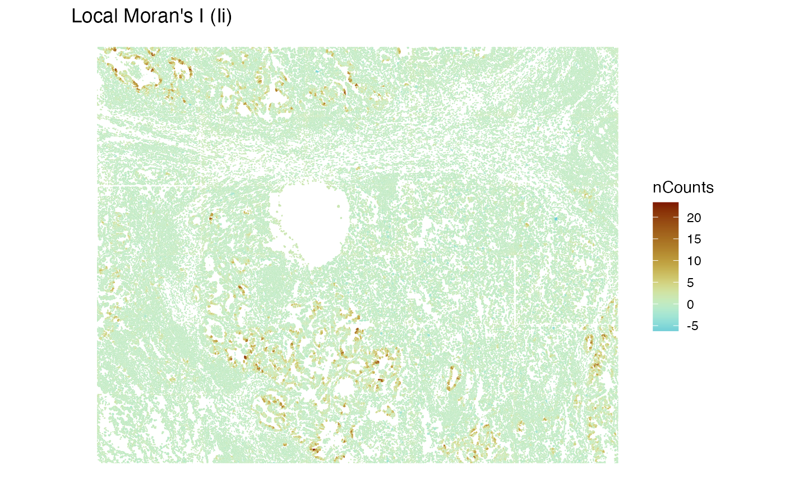
Cool, it appears that the epithelial regions tend to be more homogenous in nCounts.
Data normalization
Given that there may be some relationship between cell size and total counts, and that total counts may be biological and thus not purely treated as technical, questions are raised about data normalization and how it should be different from the standard scRNA-seq practices. For instance, what are technical contributions to total counts for this kind of data? Furthermore, what to do with cell area, since part of it is technical, in where the z-plane of cell segmentation polygons intersects each cell, but for some cell types, it could be biological? Also, how would different methods of data normalization affect spatial autocorrelation? Should spatial autocorrelation be used in some ways when normalizing data? Besides correcting for technical effects and making gene expression in cells with different total counts more comparable, data normalization stabilizes variance and tries to make the data more normally distributed since many statistical methods assume normally distributed data. So while we don’t know the best practice to normalize this kind of data, we will still normalize the data for downstream analyses.
sfe <- logNormCounts(sfe)Moran’s I
Here we run global Moran’s I on log normalized gene expression.
# Note: on your computer, you can put progressbar = TRUE inside MulticoreParam()
# to show progress bar. This applies to any BiocParallParam.
sfe <- runMoransI(sfe, features = rownames(sfe),
BPPARAM = MulticoreParam(2))Do real genes tend to have more spatial autocorrelation than negative controls?
plotRowData(sfe, x = "moran_sample01", y = "is_neg") +
geom_hline(yintercept = 0, linetype = 2)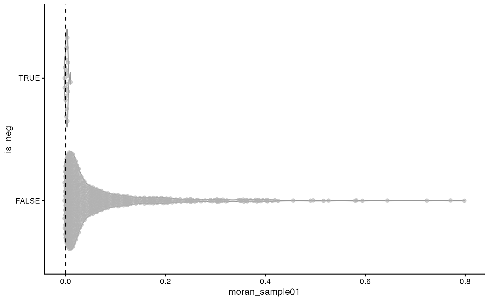
It seems that at least at the shorter length scale captured by the k nearest neighbor graph, most genes don’t have strong spatial autocorrelation while some have strong positive spatial autocorrelation. In contrast, Moran’s I for the negative controls is closely packed around 0, indicating lack of spatial autocorrelation, which is a good sign, that there is no evidence of a technical artifact that manifests as a spatial trend manifest in the negative controls.
What are the genes with the highest Moran’s I?
top_moran <- rownames(sfe)[order(rowData(sfe)$moran_sample01, decreasing = TRUE)[1:6]]
plotSpatialFeature(sfe, top_moran, colGeometryName = "centroids",
scattermore = TRUE, ncol = 2)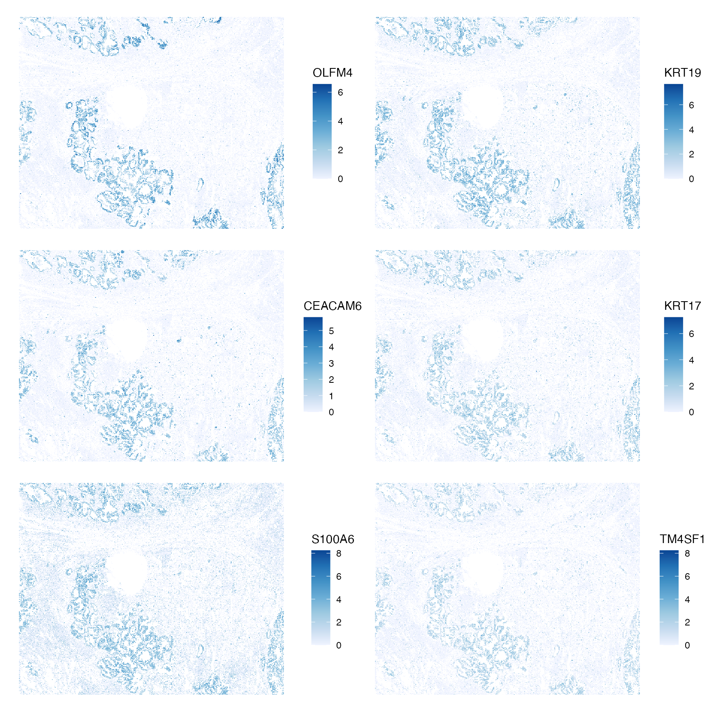
They all highlight the same epithelial regions. It could be that other regions are not as spatially organized, or that a short length scale is used for Moran’s I here but the correlogram shows that Moran’s I decays after the first order neighbors. I wonder how using a longer length scale would change the results.
Non-spatial dimension reduction and clustering
set.seed(29)
sfe <- runPCA(sfe, ncomponents = 30, scale = TRUE, BSPARAM = IrlbaParam())
ElbowPlot(sfe, ndims = 30)
plotDimLoadings(sfe, dims = 1:6)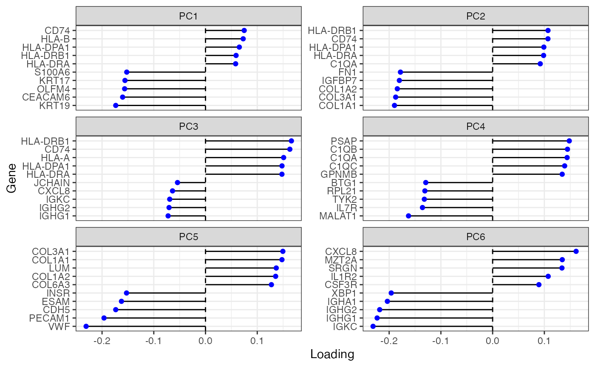
spatialReducedDim(sfe, "PCA", 6, colGeometryName = "centroids", divergent = TRUE,
diverge_center = 0, ncol = 2, scattermore = TRUE)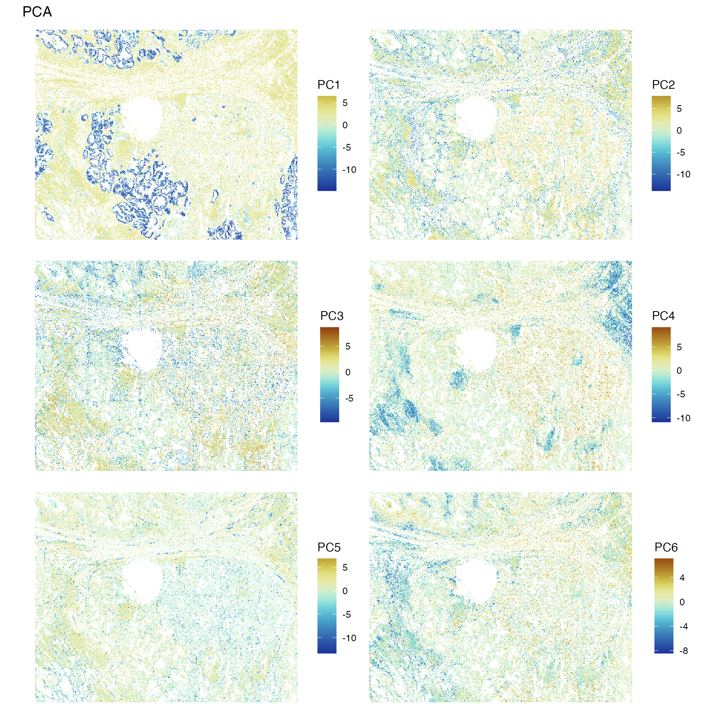
The first PC highlights the epithelium. PC2 highlights T cells. PC4 might highlight other leukocytes. Need to check the genes with the highest loadings to find what the other PCs mean.
Non-spatial clustering and locating the clusters in space
colData(sfe)$cluster <- clusterRows(reducedDim(sfe, "PCA")[,1:15],
BLUSPARAM = SNNGraphParam(
cluster.fun = "leiden",
cluster.args = list(
resolution_parameter = 0.5,
objective_function = "modularity")))
#> Warning in (function (to_check, X, clust_centers, clust_info, dtype, nn, :
#> detected tied distances to neighbors, see ?'BiocNeighbors-ties'
data("ditto_colors")
plotPCA(sfe, ncomponents = 4, colour_by = "cluster") +
scale_color_manual(values = ditto_colors)
#> Scale for colour is already present.
#> Adding another scale for colour, which will replace the existing scale.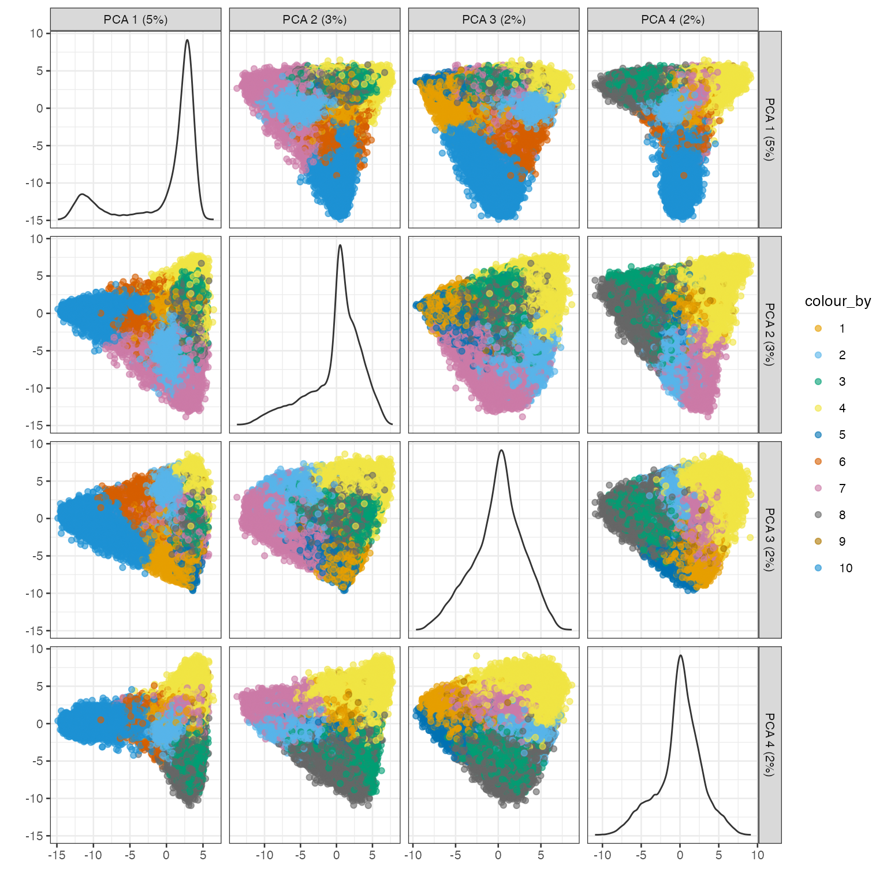
plotSpatialFeature(sfe, "cluster", colGeometryName = "cellSeg")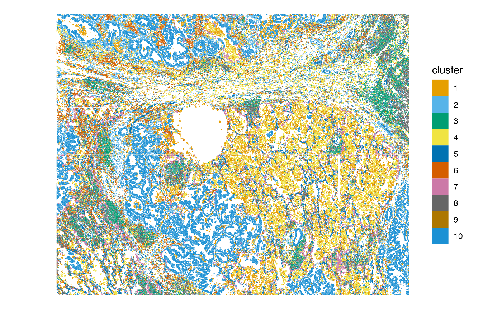
Further analyses that can be done at this stage:
- Which and how many cell types are in the neighborhood of each cell? This is subject to the different definitions of the neighborhood.
- Which cell types tend to co-localize where?
- Find spatial regions based on cell type colocalization, which can be
done with the R package
spicyR(Canete et al. 2022)
Differential expression
Cluster marker genes are found with Wilcoxon rank sum test as commonly done for scRNA-seq.
markers <- findMarkers(sfe, groups = colData(sfe)$cluster,
test.type = "wilcox", pval.type = "all", direction = "up")It’s already sorted by p-values.
markers[[6]]
#> DataFrame with 980 rows and 12 columns
#> p.value FDR summary.AUC AUC.1 AUC.2 AUC.3
#> <numeric> <numeric> <numeric> <numeric> <numeric> <numeric>
#> SERPINA1 0.00000e+00 0.00000e+00 0.900457 0.882702 0.917169 0.927197
#> LTF 0.00000e+00 0.00000e+00 0.885649 0.898378 0.896631 0.889493
#> SOD2 1.34767e-268 4.40240e-266 0.763204 0.708843 0.740953 0.759093
#> CXCL2 1.62703e-179 3.98621e-177 0.646570 0.739327 0.700563 0.752507
#> LAMP3 3.01063e-172 5.90084e-170 0.710243 0.718463 0.715373 0.716238
#> ... ... ... ... ... ... ...
#> TPSAB1 1 1 0.01337636 0.541769 0.517367 0.530969
#> TPSB2 1 1 0.00641018 0.534170 0.519936 0.530758
#> VIM 1 1 0.16441559 0.588792 0.164416 0.398639
#> VWF 1 1 0.24200118 0.517581 0.242001 0.510094
#> XBP1 1 1 0.21892716 0.676944 0.618364 0.632037
#> AUC.4 AUC.5 AUC.7 AUC.8 AUC.9 AUC.10
#> <numeric> <numeric> <numeric> <numeric> <numeric> <numeric>
#> SERPINA1 0.872056 0.928391 0.918108 0.924688 0.900457 0.860946
#> LTF 0.903540 0.905416 0.904550 0.902354 0.885649 0.897075
#> SOD2 0.703673 0.790085 0.690380 0.747167 0.763204 0.824461
#> CXCL2 0.731505 0.754922 0.743084 0.752041 0.738496 0.646570
#> LAMP3 0.714841 0.720568 0.722422 0.715502 0.710243 0.716974
#> ... ... ... ... ... ... ...
#> TPSAB1 0.527268 0.532545 0.525186 0.522748 0.01337636 0.518232
#> TPSB2 0.520962 0.507907 0.524842 0.522807 0.00641018 0.524115
#> VIM 0.360806 0.469073 0.344926 0.360144 0.31454577 0.633386
#> VWF 0.511037 0.508046 0.515044 0.509359 0.50754675 0.508200
#> XBP1 0.616943 0.218927 0.611995 0.614587 0.59660992 0.493690Get the the significant marker for each cluster to plot. Since
there’re too many points, here we used the development version of
scater to not to plot the points, which are uninformative
due to overplotting and make this plot really slow.
genes_use <- vapply(markers, function(x) rownames(x)[1], FUN.VALUE = character(1))
plotExpression(sfe, genes_use, x = "cluster", point_fun = function(...) list())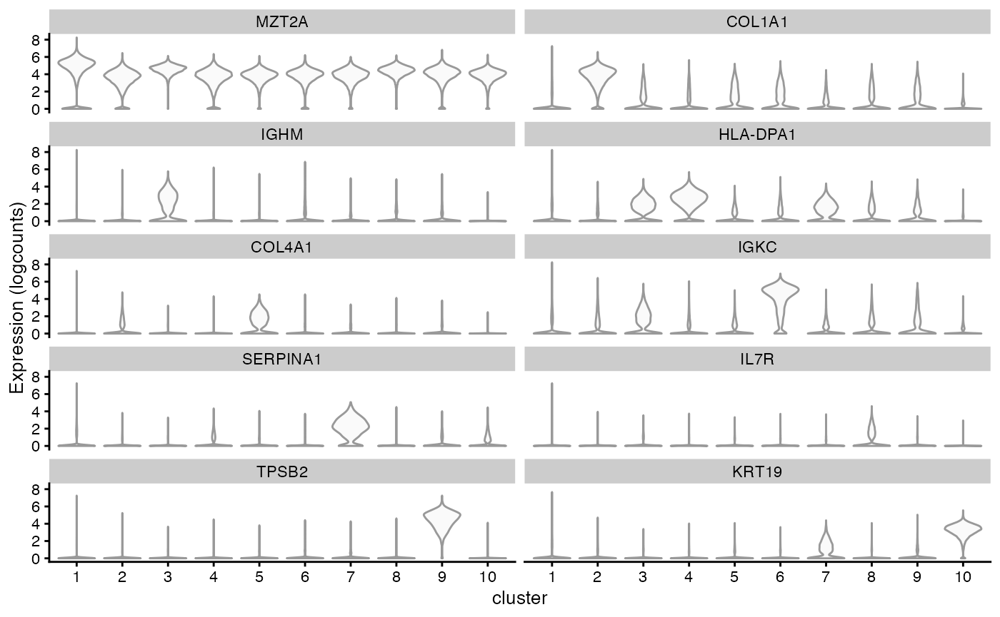
Plot more top marker genes in a heatmap
genes_use2 <- unique(unlist(lapply(markers, function(x) rownames(x)[1:5])))
plotGroupedHeatmap(sfe, genes_use2, group = "cluster", colour = scales::viridis_pal()(100))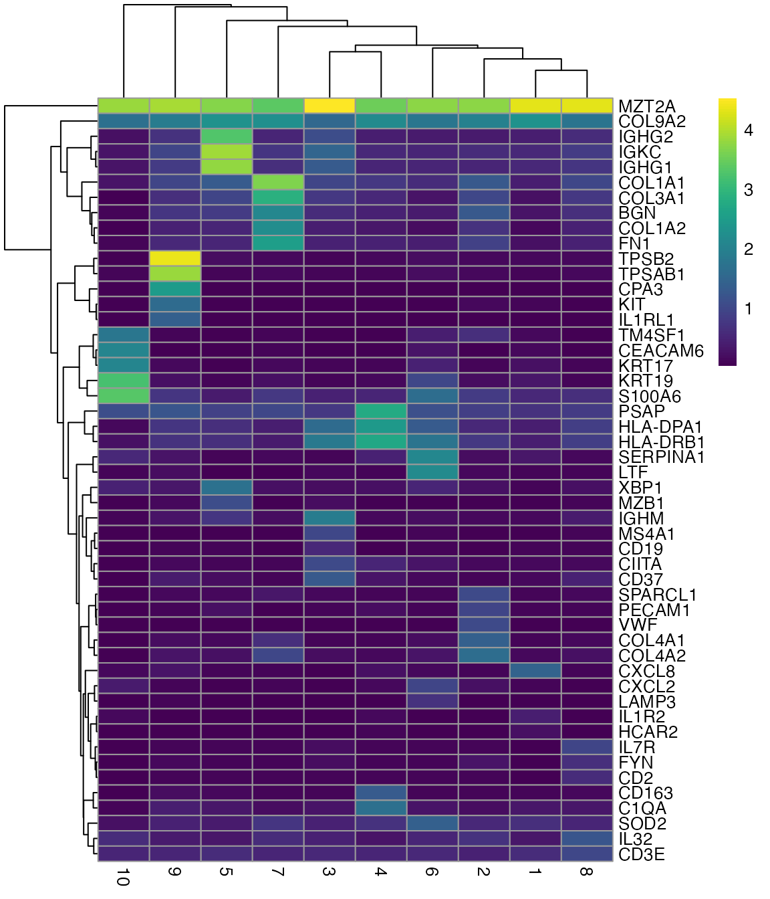
Local spatial statistics of marker genes
Plot those genes in space
plotSpatialFeature(sfe, genes_use, colGeometryName = "centroids", ncol = 2,
scattermore = TRUE)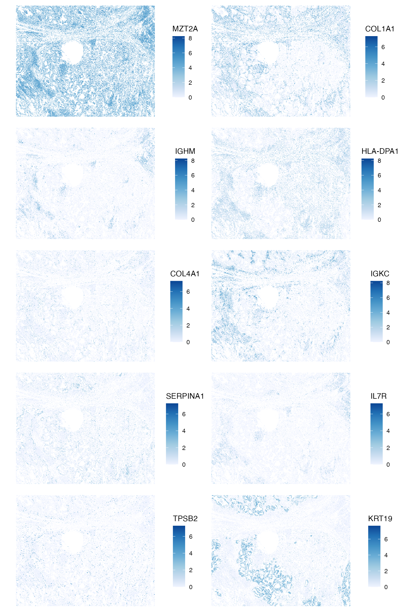
Moran’s I of these marker genes
rowData(sfe)[genes_use, "moran_sample01", drop = FALSE]
#> DataFrame with 10 rows and 1 column
#> moran_sample01
#> <numeric>
#> MZT2A 0.199130
#> COL4A1 0.213595
#> IGHM 0.293282
#> HLA-DPA1 0.242441
#> IGKC 0.425192
#> SERPINA1 0.254077
#> COL1A1 0.394780
#> IL7R 0.177655
#> TPSB2 0.206115
#> KRT19 0.770433Local Moran’s I of these marker genes
sfe <- runUnivariate(sfe, "localmoran", features = genes_use, colGraphName = "knn5",
BPPARAM = MulticoreParam(2))
plotLocalResult(sfe, "localmoran", features = genes_use,
colGeometryName = "centroids", ncol = 2, divergent = TRUE,
diverge_center = 0, scattermore = TRUE)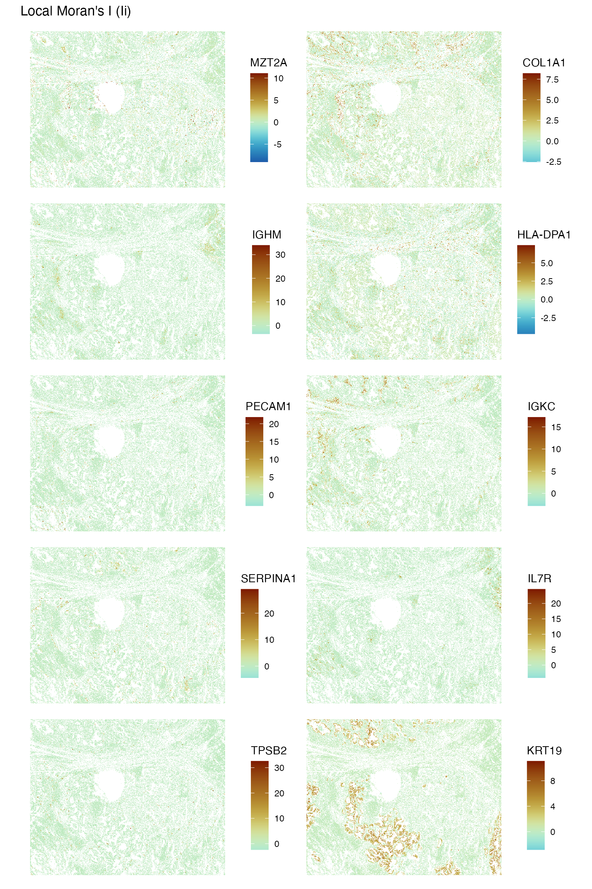
It seems that some histological regions tend to be more spatially homogenous in gene expression than others. The epithelial region tends to be more homogenous.
Run local spatial heteroscdasticity (LOSH) for these marker genes to find local heterogeneity
sfe <- runUnivariate(sfe, "LOSH", features = genes_use, colGraphName = "knn5",
BPPARAM = MulticoreParam(2))
plotLocalResult(sfe, "LOSH", features = genes_use,
colGeometryName = "centroids", ncol = 2, scattermore = TRUE)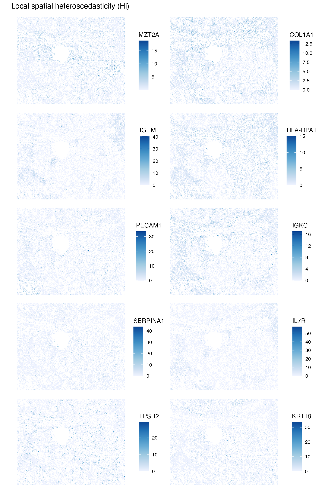
Some genes are more heterogeneous where they are also more highly expressed, such as COLA1 and IGKC. However this is not the case for all genes. For example, MZT2A is quite ubiqiutously experssed, but is more heterogeneous in some regions than others, and KRT19 does not seem to be much more heterogeneous where it’s more highly expressed. For MZT2A, LOSH picked up the artifact of the edges of the FOVs, although this is not apparent for other genes plotted here. Here we don’t have information on which cell belongs to which FOV, but FOV edge effects should be considered in data normalization. It would be interesting to more systematically see how LOSH relates to gene expression across more genes, and how this differs in cell types and gene functions.
Session Info
sessionInfo()
#> R version 4.3.3 (2024-02-29)
#> Platform: x86_64-apple-darwin20 (64-bit)
#> Running under: macOS Ventura 13.6.6
#>
#> Matrix products: default
#> BLAS: /Library/Frameworks/R.framework/Versions/4.3-x86_64/Resources/lib/libRblas.0.dylib
#> LAPACK: /Library/Frameworks/R.framework/Versions/4.3-x86_64/Resources/lib/libRlapack.dylib; LAPACK version 3.11.0
#>
#> locale:
#> [1] en_US.UTF-8/en_US.UTF-8/en_US.UTF-8/C/en_US.UTF-8/en_US.UTF-8
#>
#> time zone: UTC
#> tzcode source: internal
#>
#> attached base packages:
#> [1] stats4 stats graphics grDevices utils datasets methods
#> [8] base
#>
#> other attached packages:
#> [1] SpatialFeatureExperiment_1.3.0 BiocSingular_1.18.0
#> [3] BiocParallel_1.36.0 spdep_1.3-3
#> [5] sf_1.0-16 spData_2.3.0
#> [7] stringr_1.5.1 patchwork_1.2.0
#> [9] bluster_1.12.0 scran_1.30.2
#> [11] scater_1.30.1 ggplot2_3.5.1
#> [13] scuttle_1.12.0 SpatialExperiment_1.12.0
#> [15] SingleCellExperiment_1.24.0 SummarizedExperiment_1.32.0
#> [17] Biobase_2.62.0 GenomicRanges_1.54.1
#> [19] GenomeInfoDb_1.38.8 IRanges_2.36.0
#> [21] S4Vectors_0.40.2 BiocGenerics_0.48.1
#> [23] MatrixGenerics_1.14.0 matrixStats_1.3.0
#> [25] SFEData_1.4.0 Voyager_1.4.0
#>
#> loaded via a namespace (and not attached):
#> [1] splines_4.3.3 later_1.3.2
#> [3] bitops_1.0-7 filelock_1.0.3
#> [5] tibble_3.2.1 lifecycle_1.0.4
#> [7] edgeR_4.0.16 lattice_0.22-6
#> [9] magrittr_2.0.3 limma_3.58.1
#> [11] sass_0.4.9 rmarkdown_2.26
#> [13] jquerylib_0.1.4 yaml_2.3.8
#> [15] metapod_1.10.1 httpuv_1.6.15
#> [17] sp_2.1-4 cowplot_1.1.3
#> [19] DBI_1.2.2 RColorBrewer_1.1-3
#> [21] abind_1.4-5 zlibbioc_1.48.2
#> [23] purrr_1.0.2 RCurl_1.98-1.14
#> [25] rappdirs_0.3.3 GenomeInfoDbData_1.2.11
#> [27] ggrepel_0.9.5 irlba_2.3.5.1
#> [29] terra_1.7-71 pheatmap_1.0.12
#> [31] units_0.8-5 RSpectra_0.16-1
#> [33] dqrng_0.3.2 pkgdown_2.0.9
#> [35] DelayedMatrixStats_1.24.0 codetools_0.2-20
#> [37] DelayedArray_0.28.0 tidyselect_1.2.1
#> [39] farver_2.1.1 ScaledMatrix_1.10.0
#> [41] viridis_0.6.5 BiocFileCache_2.10.2
#> [43] jsonlite_1.8.8 BiocNeighbors_1.20.2
#> [45] e1071_1.7-14 systemfonts_1.0.6
#> [47] tools_4.3.3 ggnewscale_0.4.10
#> [49] ragg_1.3.1 Rcpp_1.0.12
#> [51] glue_1.7.0 gridExtra_2.3
#> [53] SparseArray_1.2.4 mgcv_1.9-1
#> [55] xfun_0.43 dplyr_1.1.4
#> [57] HDF5Array_1.30.1 withr_3.0.0
#> [59] BiocManager_1.30.23 fastmap_1.1.1
#> [61] boot_1.3-30 rhdf5filters_1.14.1
#> [63] fansi_1.0.6 digest_0.6.35
#> [65] rsvd_1.0.5 R6_2.5.1
#> [67] mime_0.12 textshaping_0.3.7
#> [69] colorspace_2.1-0 wk_0.9.1
#> [71] scattermore_1.2 RSQLite_2.3.6
#> [73] hexbin_1.28.3 utf8_1.2.4
#> [75] generics_0.1.3 class_7.3-22
#> [77] httr_1.4.7 htmlwidgets_1.6.4
#> [79] S4Arrays_1.2.1 pkgconfig_2.0.3
#> [81] scico_1.5.0 gtable_0.3.5
#> [83] blob_1.2.4 XVector_0.42.0
#> [85] htmltools_0.5.8.1 scales_1.3.0
#> [87] png_0.1-8 knitr_1.45
#> [89] rjson_0.2.21 nlme_3.1-164
#> [91] curl_5.2.1 proxy_0.4-27
#> [93] cachem_1.0.8 rhdf5_2.46.1
#> [95] BiocVersion_3.18.1 KernSmooth_2.23-22
#> [97] parallel_4.3.3 vipor_0.4.7
#> [99] AnnotationDbi_1.64.1 desc_1.4.3
#> [101] s2_1.1.6 pillar_1.9.0
#> [103] grid_4.3.3 vctrs_0.6.5
#> [105] promises_1.3.0 dbplyr_2.5.0
#> [107] beachmat_2.18.1 xtable_1.8-4
#> [109] cluster_2.1.6 beeswarm_0.4.0
#> [111] evaluate_0.23 magick_2.8.3
#> [113] cli_3.6.2 locfit_1.5-9.9
#> [115] compiler_4.3.3 rlang_1.1.3
#> [117] crayon_1.5.2 labeling_0.4.3
#> [119] classInt_0.4-10 fs_1.6.4
#> [121] ggbeeswarm_0.7.2 stringi_1.8.4
#> [123] viridisLite_0.4.2 deldir_2.0-4
#> [125] munsell_0.5.1 Biostrings_2.70.3
#> [127] Matrix_1.6-5 ExperimentHub_2.10.0
#> [129] sparseMatrixStats_1.14.0 bit64_4.0.5
#> [131] Rhdf5lib_1.24.2 KEGGREST_1.42.0
#> [133] statmod_1.5.0 shiny_1.8.1.1
#> [135] interactiveDisplayBase_1.40.0 highr_0.10
#> [137] AnnotationHub_3.10.1 igraph_2.0.3
#> [139] memoise_2.0.1 bslib_0.7.0
#> [141] bit_4.0.5